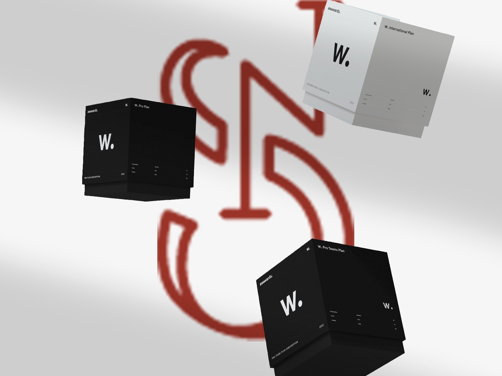
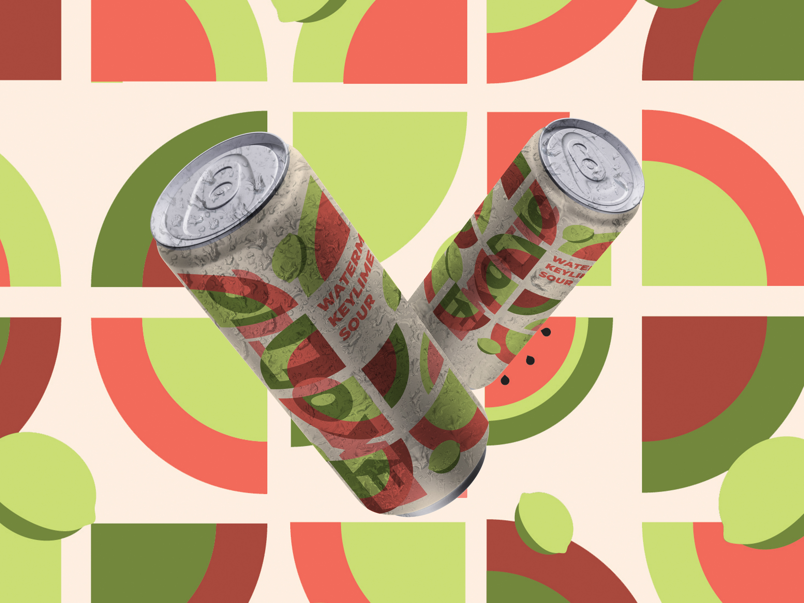
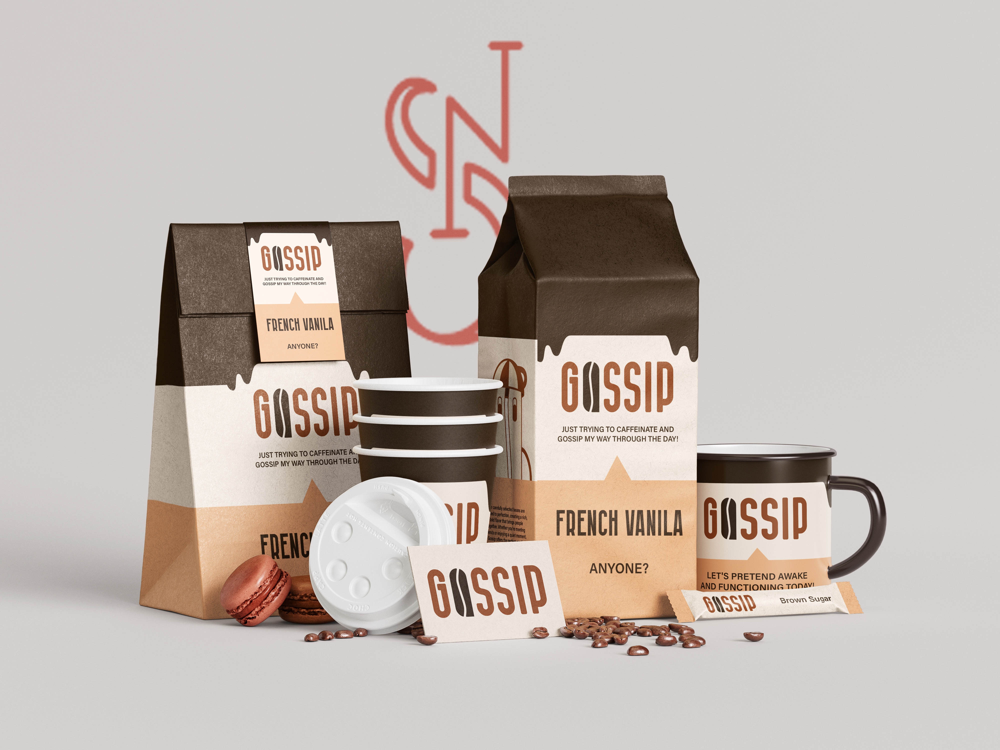
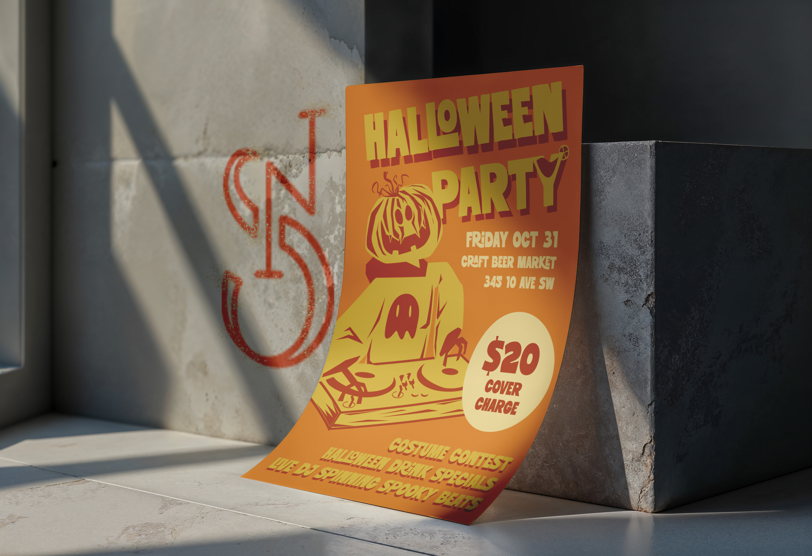
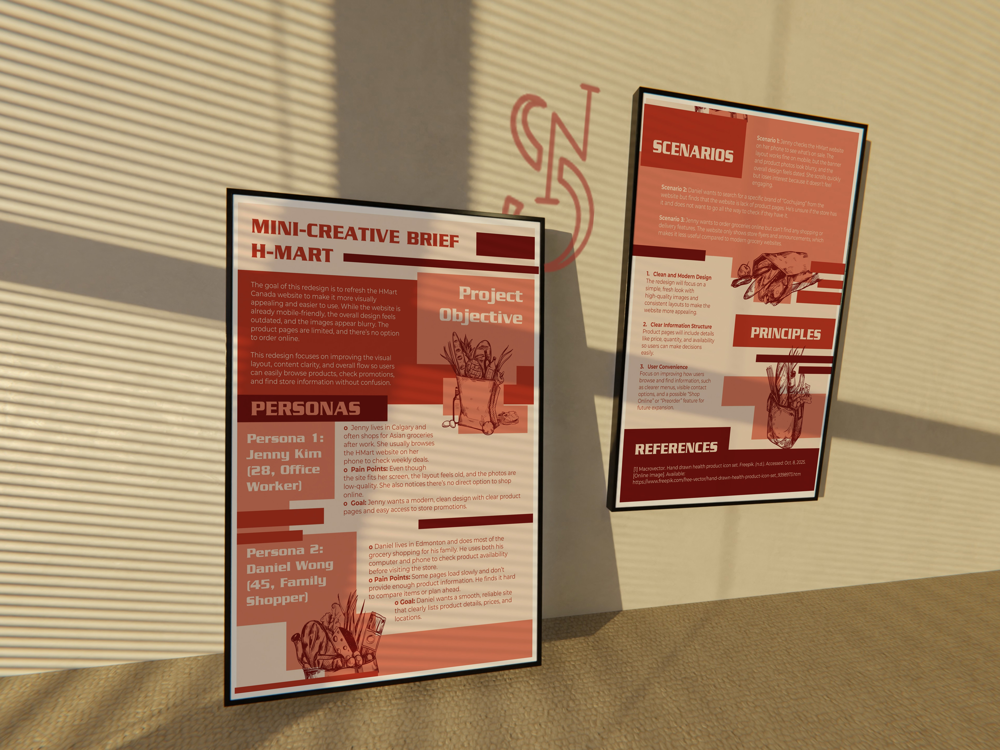

Projects
These are my precious collections.

This project was a UI/UX analysis completed for an Interaction Design course, focusing on evaluating the Awwwards website. The goal was to identify usability issues and explore ways to improve the user experience while maintaining its strong visual identity. As the UX/UI Designer and researcher, I conducted heuristic and usability analysis, identified key navigation and interaction challenges, and proposed design improvements supported by visual suggestions.
MORE
This project is a packaging design concept created based on the existing brand Main Street Brewing. The goal was to design a visually engaging beer can that aligns with the brand while introducing a fresh and distinctive flavor identity. I developed the concept for a “Watermelon Keylime Sour,” focusing on bold colors, geometric patterns, and playful compositions to reflect the refreshing and vibrant nature of the product. As the designer, I was responsible for the visual direction, pattern design, layout, and final packaging outcome.
MORE
This project is a brand guideline developed for “Gossip,” a coffee shop concept focused on creating a warm, social, and inviting atmosphere. The goal was to build a cohesive visual identity that reflects both coffee culture and conversation. As the designer, I created the full brand system, including logo design, color palette, typography, iconography, and usage guidelines, ensuring consistency across all brand touchpoints.
MORE
This project is a fast-paced visual design exercise where I created a Halloween party poster within a 2-hour timeframe, from initial ideation to final design. The goal was to develop a visually engaging and eye-catching event poster that clearly communicates key information while capturing a fun and energetic Halloween vibe. As the designer, I was responsible for the full process, including concept development, illustration, layout, and final execution. The main character was fully hand-drawn, adding a unique and personal touch to the design.
MORE
This project was a UX redesign concept for the H-Mart Canada website, completed as part of an Intermediate UX course. The goal was to improve the overall user experience by addressing outdated visuals, unclear layouts, and limited product information, while making the website more engaging and easier to navigate. As the UX/UI Designer, I developed personas, analyzed user pain points, created user scenarios, and proposed design solutions focused on improving content clarity, navigation, and overall usability.
MORE
Freelancing should be about creating, not chasing feedback. That idea became Revisal, our capstone project developed in collaboration with Sanjana Mittal, Jaspreet Kaur, Danice Biano, Rocel De Leon, Evan James Otilla, and Faribah Nawar. We set out to simplify communication between creatives and clients by bringing projects, feedback, and files into one platform. As the UX/UI Designer, I focused on user research, wireframing, interface design, and usability improvements to create a seamless collaboration experience.
MORE
This project is a brand guideline developed for “Sara Keki,” a cupcake shop concept inspired by soft, delicate, and playful aesthetics. The goal was to create a cohesive visual identity that reflects the sweetness and charm of the brand while maintaining clarity and consistency across different applications. As the designer, I developed the full brand system, including logo design, color palette, typography, and layout guidelines, with inspiration drawn from Japanese visual elements and minimal design principles.
MORE
This project was a branding and visual design project for Sunnyside Up, developed as part of a team collaboration with Evan James Otilla, Faribah Nawar, Ivy Porras, and Yan Duan. The goal was to create a cohesive and engaging brand identity that could be applied across multiple touchpoints. As the main Graphic Designer, I was responsible for designing the logo, social media assets, packaging, and icon system, ensuring a consistent visual language that reflects the brand’s personality and tone.
MORE
This project is an individual visual design assignment focused on creating a collection of three design pieces based on a chosen concept. I explored the theme of birth, life, and death, translating these abstract ideas into minimalist geometric tattoo designs. As the designer, I developed the concept, visual direction, and final outcomes, using simple forms and symbolism to communicate meaning in a clear and intentional way.
MORE